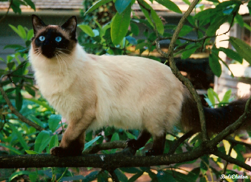

O gato (nome científico: Felis silvestris catus) ou gato doméstico é um mamífero carnívoro da família dos felídeos, muito popular como animal de estimação. Ocupando o topo da cadeia alimentar, é predador natural de diversos animais, como roedores, pássaros, lagartixas e alguns insetos. Segundo pesquisas realizadas por instituições norte-americanas, os gatos consistem no segundo animal de estimação mais popular do mundo, estando numericamente atrás apenas dos peixes de aquário. Consta em trigésimo nono na lista das 100 das espécies exóticas invasoras mais daninhas do mundo da União Internacional para a Conservação da Natureza (UICN).
A primeira associação dos gatos com os humanos da qual se tem evidência ocorreu há cerca de 9 500 anos, período mais antigo ao estimado anteriormente, que oscilava entre 3 500 e 8 000 anos. A subfamília dos felíneos (Felinae), que agrupa os gatos domésticos, surgiu há cerca de 12 milhões de anos, expandindo-se a partir da África subsaariana até alcançar as terras do atual Egito. Acredita-se que o gato-selvagem-africano (Felis silvestris lybica) era seu antepassado imediato. Adicionalmente, evidências genéticas assinalam que os gatos domésticos atuais partilham procedência direta com os gatos selvagens do Oriente Médio.
Existem cerca de 250 raças de gato doméstico, cujo peso variável entre 2,5 a 12 quilos coloca a espécie na categoria de animal doméstico de pequeno a médio porte. Assim como ocorre com algumas raças de cães que apresentam esta mesma faixa de peso, o gato doméstico pode viver entre quinze e vinte anos. Dados censitários apontam que nos Estados Unidos existem mais gatos domésticos do que cachorros. Estimativas recentes indicam que, em breve, o Brasil terá a mesma característica, passando a ter maior população felina do que canina em suas residências.
Devido à sua personalidade independente, tornou-se animal de companhia em diversos lares ao redor do mundo, agradando pessoas dos mais variados estilos de vida. Na cultura humana, figura da mitologia às superstições, passando por personagens de desenhos animados, tiras de jornais, filmes e contos de fadas. Entre suas mais conhecidas representações estão Tom, O Gato de Botas, Garfield, Frajola etc.
